Alexander Rodchenko
Print, Typography
A timeline illustrating and discussing the life and achievements of Alexander Rodchenko – artist, sculptor, photographer, designer and pivotal leader in Russian Constructivism, as well as the various connections and context that impacted his work and set precedents for the future of design.
Rodchenko's graphic work consists of a wide range of Soviet advertising propaganda utilizing bright and solid colors, thick and sharp lines, diagonals, inherent symmetry and bold lettering. In my timeline layout, I organized and divided the information in a way that reflected my personal style while working with geometric elements inspired by his design approach.
8" x 100" Accordian Book
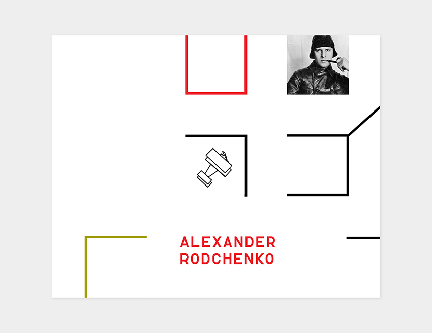
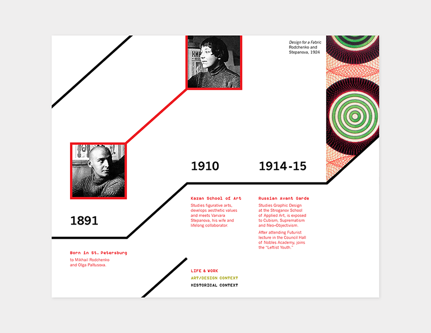
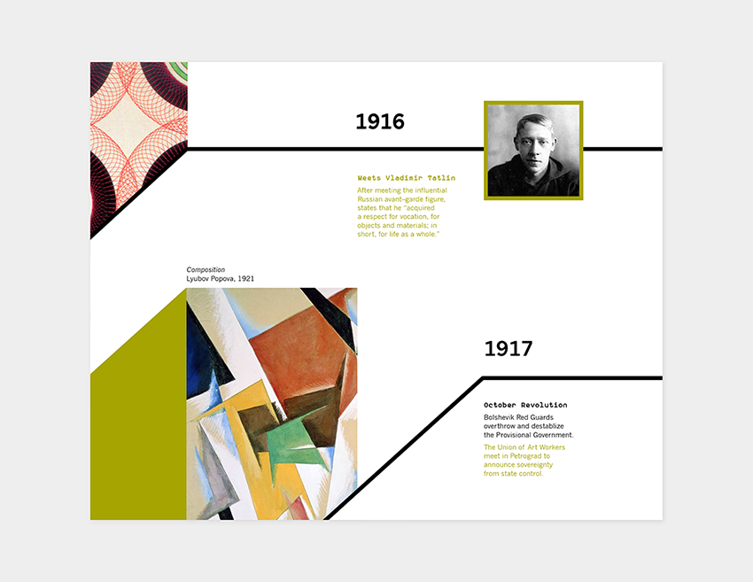
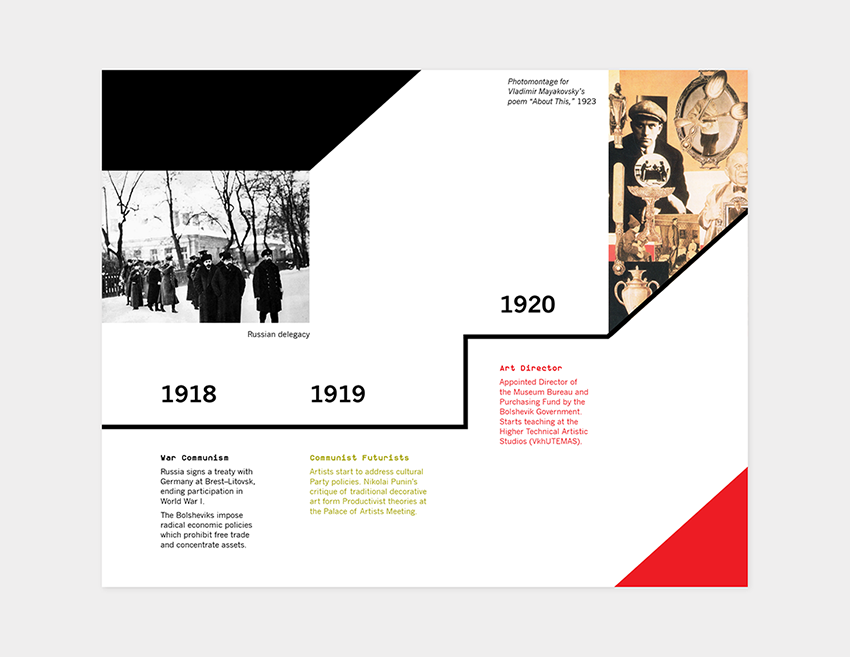
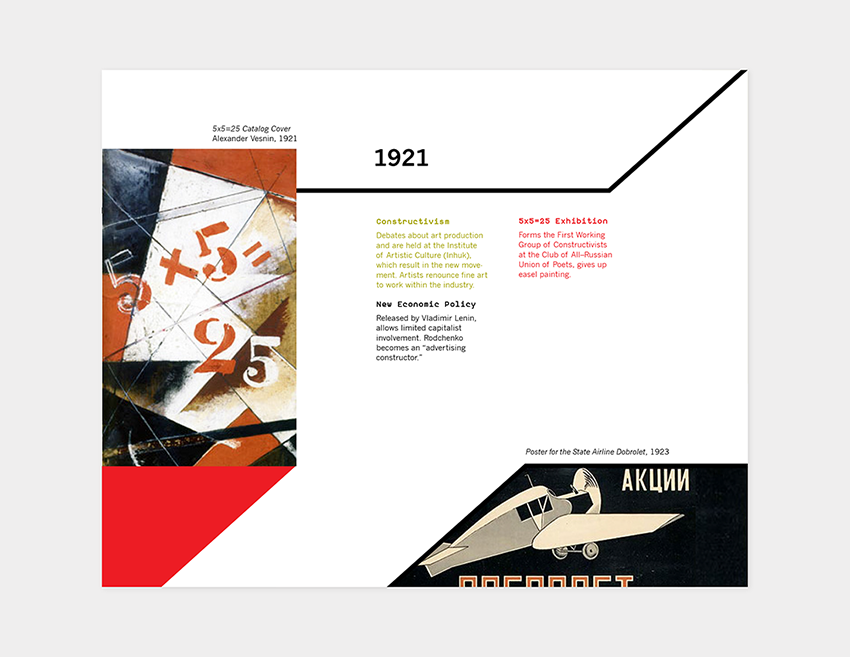
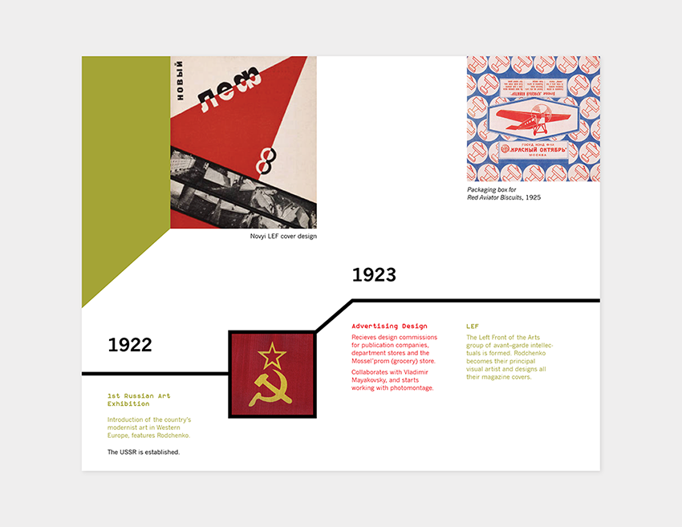
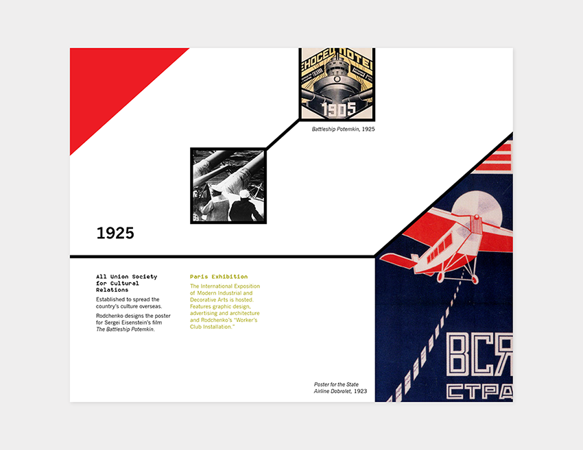
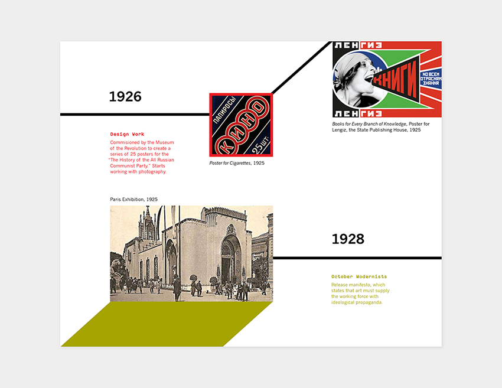
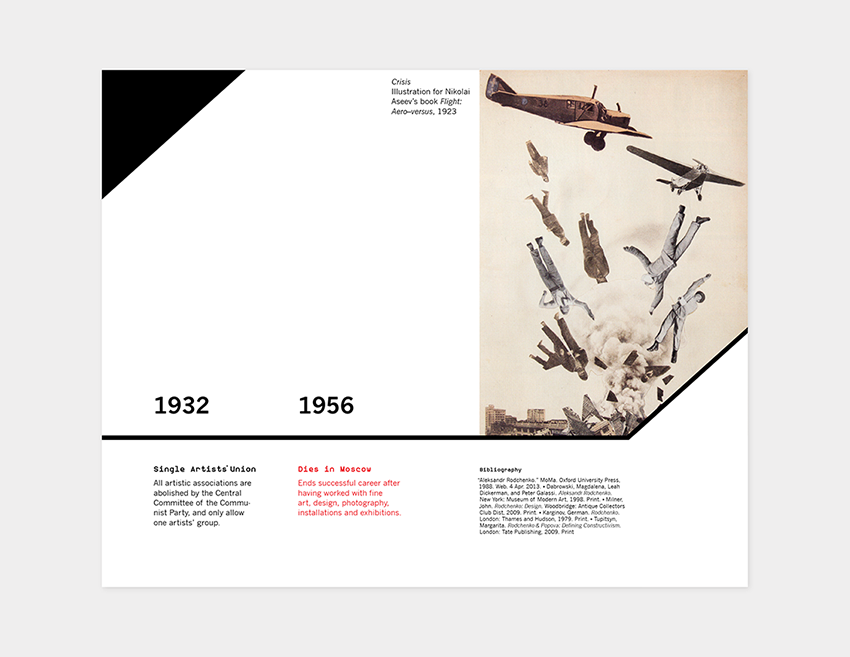
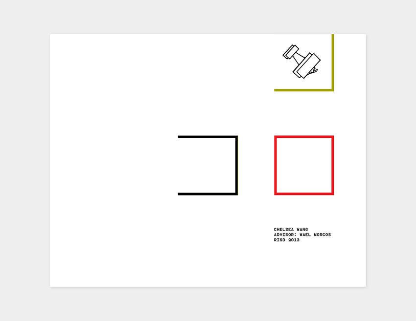
Full Spread
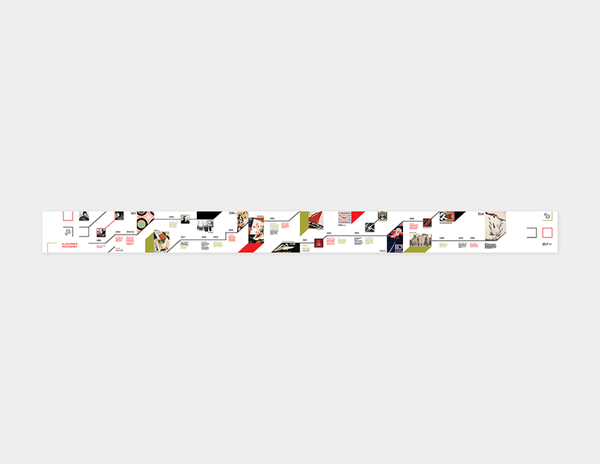